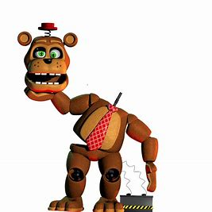
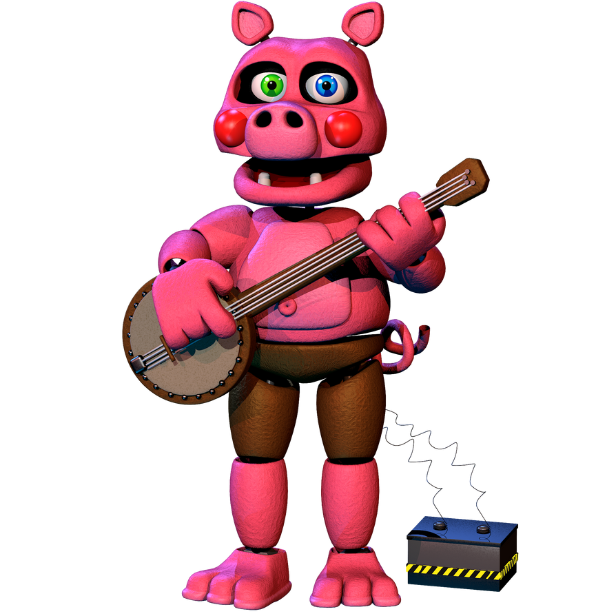
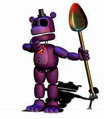
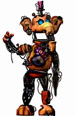
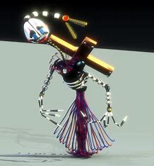
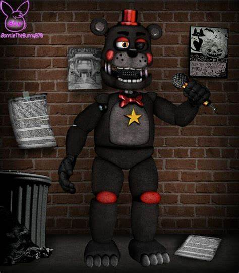

Nedbear

Nedd Bear is a light brown animatronic bear with tan accents around his muzzle, eye sockets,
palms, under both feet, and belly. He resembles the designs of the original animatronics from the first game,
specifically Freddy Fazbear.
He has droopy green eyes, a red tie with diagonal white stripes, and a red flat hat.
Happy Frog
 Happy Frog is an animatronic and a member of the Mediocre Melodies, first appearing in Freddy Fazbear's Pizzeria
Simulator. Happy Frog is a light green animatronic frog who resembles the designs of the original animatronics
Happy Frog is an animatronic and a member of the Mediocre Melodies, first appearing in Freddy Fazbear's Pizzeria
Simulator. Happy Frog is a light green animatronic frog who resembles the designs of the original animatronics
Pig Patch

Not what you were looking for? See Pigpatch from the Fazbear Frights universe. Or were you looking for the other pig animatronic
character with a similar name, the FNaF World boss, Porkpatch? Pigpatch is an animatronic and a member of the Mediocre Melodies,
making his first appearance in Freddy Fazbear's Pizzeria Simulator. Pigpatch is a pink animatronic pig with light pink accents on
snout,
inner ears, torso, and on the bottom of his feet. A pink belly button can be seen on his torso, as we
Mr Hippo>

Mr. Hippo, from FNaF Pizzeria Simulator, is one of the new animatronic you can buy in FFPS. He is a member of the Mediocre
Melodies along with Happy Frog, Pigpatch, Ned Bear and his friend Orville. In this game, he will not attack you. This changes,
however, in UCN. He becomes an antagonist along with the rest of the Mediocre Melodies and they must use the ducts to get to the
player.
He is a rather unique character, as his death quotes are by (very) far the longest in the game, mainly consisting
Orville

Orville Elephant is an animatronic and a member of the Mediocre Melodies. He makes his first debut in Freddy Fazbear's Pizzeria
Simulator. Orville is an orange animatronic elephant with lighter accents on his trunk, inner ears, his torso, hoof toes, and
around his blue eyes. He has teeth on his bottom jaw. He wears a purple top hat with a white stripe at the base, and has two black
buttons on his chest. Similar to Mr. Hippo, Orville has a large flower on his chest, but the petals are purple

Security Puppet
The Security Puppet is a "security"-type variant of the Puppet who made its debut in Freddy Fazbear's Pizzeria Simulator.
The Security Puppet's arms are covered with black and white stripes, sporting black joints, and appear to
be suspended by two strings similar to an unused Five Nights at Freddy's 2 file of the original Puppet with strings.
It also appears to have only one white button on the middle of its chest, with white stripes
Lefty

Lefty's general appearance is almost identical in appearance to Rockstar Freddy, the only differences being the
color scheme, the missing eye, and a larger nose. He is a black bear sporting a red top hat, bowtie, eyelids, cheeks,
and knee caps and holds a yellow microphone in his left hand (rather than their right like Freddy, hence his name).
He has a lighter shade of gray on his chest, muzzle, ear insides, and his toes. His right eye is light orange while the
left is completely black. He also sports a golden yellow star on his chest, signifying him as a part of the rockstar
animatronic set. In addition to his left eye being black, his left eyelid is droopy and
half-folded over the eye. This can be seen during his jumpscares from Freddy Fazbear's Pizzeria Simulator